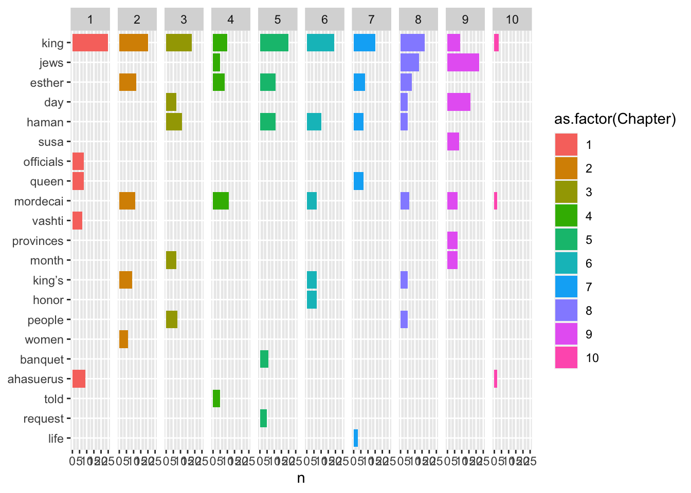
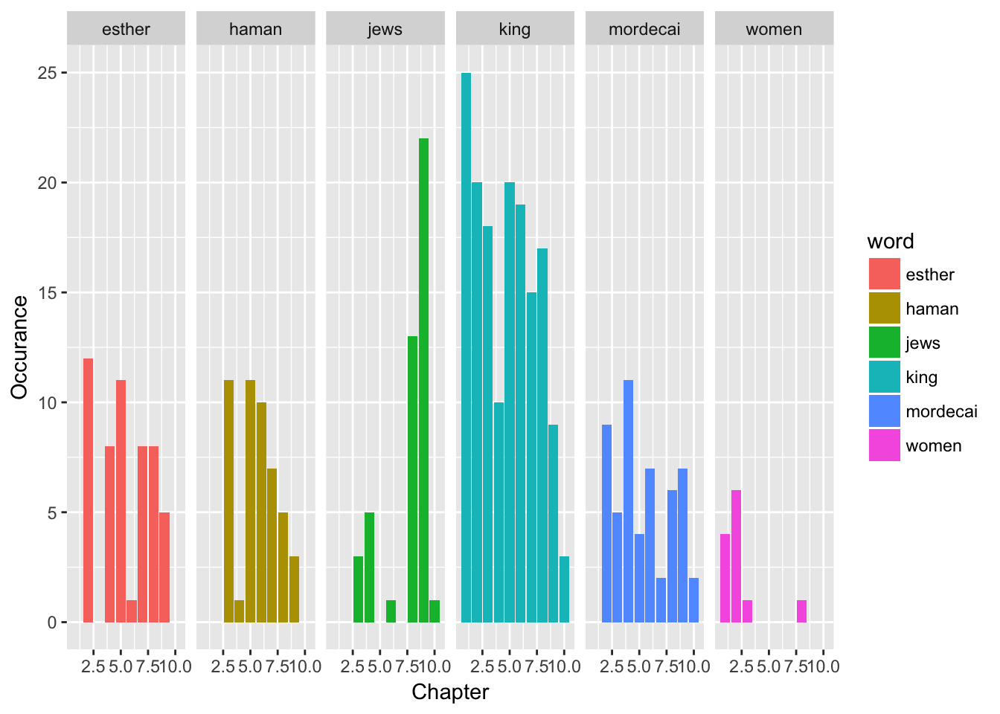
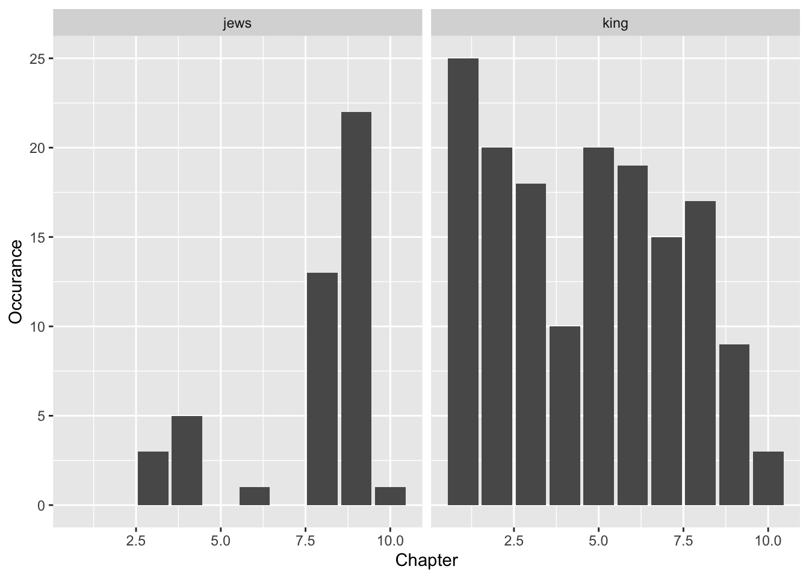
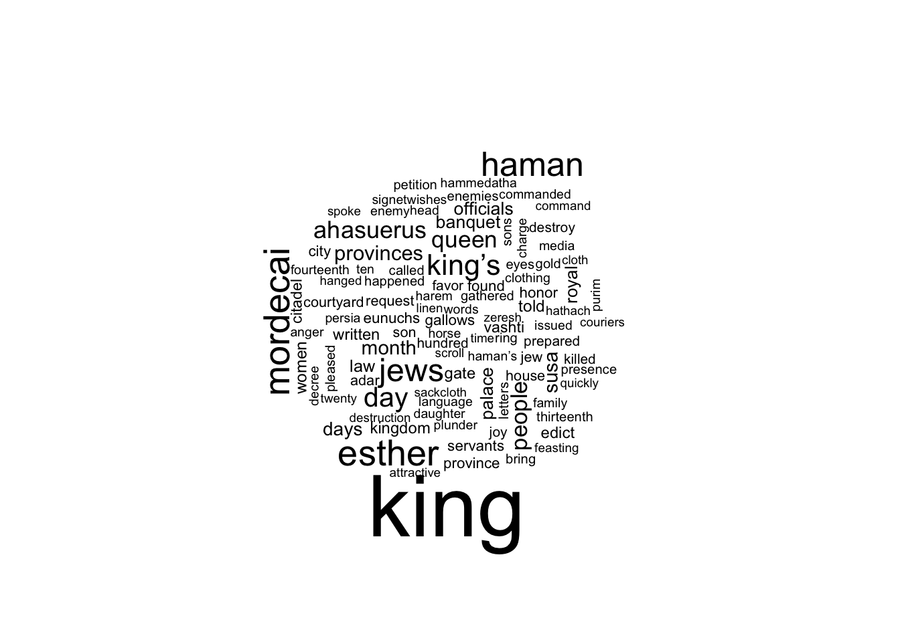

library(httr)
library(tidytext)
library(jsonlite)
library(tidyverse)## ── Attaching packages ────────────────────────────────────────────────────── tidyverse 1.2.1 ──## ✔ ggplot2 2.2.1 ✔ purrr 0.2.4
## ✔ tibble 1.4.1 ✔ dplyr 0.7.4
## ✔ tidyr 0.7.2 ✔ stringr 1.2.0
## ✔ readr 1.1.1 ✔ forcats 0.2.0## ── Conflicts ───────────────────────────────────────────────────────── tidyverse_conflicts() ──
## ✖ dplyr::filter() masks stats::filter()
## ✖ purrr::flatten() masks jsonlite::flatten()
## ✖ dplyr::lag() masks stats::lag()library(wordcloud)## Loading required package: RColorBrewerlibrary(XML)
source("~/keys.R")
key <- bibliaThere is much to be learned in the form of writing and the relationship it has within and outside the text. The question we might want to ask is there a way to identify the story arc of the situation. Using spacy to tag all of the words will increase the likelyhood to better understand the
style <- "oneVersePerLineFullReference" #oneVersePerLine, bibleTextOnly, oneVersePerLineFullReference
output <- "html"
passage <-"Esther1-10"
resp <- GET(paste0("https://api.biblia.com/v1/bible/content/LEB.",output,"?passage=",passage,"&style=",style,"&key=",key))Create the Data Frame
TODO: Need to make sure to figure out the book regex to include books such as 1 Timothy where there are parts of the book
passage <- plain.text %>%
mutate(
Book = str_extract(Text, "^([*?\\w]+)"),
Chapter = as.numeric(str_extract(Text,"\\d+(?=:\\n?)")),
Verse = as.numeric(str_extract(Text,"(?<=\\:)\\d+")),
Line = str_replace(Text, "^([*?\\w]+\\s\\w+\\:\\w+)",""))
tibble(Text = passage$Text)## # A tibble: 167 x 1
## Text
## <chr>
## 1 "Esther 1:1 And it happened in the days of Ahasuerus, the Ahasuerus wh…
## 2 "Esther 1:2 In those days as King Ahasuerus was sitting on the throne …
## 3 "Esther 1:3 he gave a banquet in the third year of his reign for all h…
## 4 "Esther 1:4 as he displayed the wealth of the glory of his kingdom and…
## 5 "Esther 1:5 And when those days were completed, the king gave for all …
## 6 "Esther 1:6 There were curtains of finely woven linen and blue cloth t…
## 7 "Esther 1:7 Drinks were served in goblets of gold and goblets of diffe…
## 8 "Esther 1:8 There were no restrictions on the drinking, for the king h…
## 9 "Esther 1:9 Furthermore, Queen Vashti gave a banquet for the women in …
## 10 "Esther 1:10 On the seventh day, when the heart of the king was merry …
## # ... with 157 more rowsdata("stop_words") # Remove stop words
passage_frame <- passage %>% select(Book, Chapter, Verse, Line) %>% unnest_tokens(word, Line) %>%
anti_join(stop_words)## Joining, by = "word"head(passage_frame)## # A tibble: 6 x 4
## Book Chapter Verse word
## <chr> <dbl> <dbl> <chr>
## 1 Esther 1.00 1.00 happened
## 2 Esther 1.00 1.00 days
## 3 Esther 1.00 1.00 ahasuerus
## 4 Esther 1.00 1.00 ahasuerus
## 5 Esther 1.00 1.00 reigned
## 6 Esther 1.00 1.00 indiaHere to simply look at the entire passage as a whole, this is what we are able to retrieve in counts after having removed the words.
passage_frame_cnt <- passage_frame %>% count(word, sort = TRUE)
head(passage_frame_cnt)## # A tibble: 6 x 2
## word n
## <chr> <int>
## 1 king 156
## 2 esther 53
## 3 mordecai 53
## 4 haman 48
## 5 jews 45
## 6 king’s 38passage_framea_cnt <- passage_frame %>% group_by(Chapter) %>% count(word, sort = TRUE)
head(passage_framea_cnt)## # A tibble: 6 x 3
## # Groups: Chapter [6]
## Chapter word n
## <dbl> <chr> <int>
## 1 1.00 king 25
## 2 9.00 jews 22
## 3 2.00 king 20
## 4 5.00 king 20
## 5 6.00 king 19
## 6 3.00 king 18Word frequencies by chapter
library(ggplot2)
g <- passage_framea_cnt %>%
top_n(5) %>%
filter(n > 1) %>%
ggplot(aes(reorder(word, n), n, fill = as.factor(Chapter))) +
geom_col() +
xlab(NULL) +
facet_grid(.~Chapter) +
coord_flip()
g
gb <- passage_framea_cnt %>%
filter(word %in% c("king","jews","mordecai","haman","esther", "women")) %>%
ggplot(aes(Chapter, n, fill = word )) +
geom_col() +
labs(x = "Chapter", y = "Occurance") +
facet_grid(. ~ word)
gb
ga <- passage_framea_cnt %>% filter(word %in% c("king","jews")) %>%
ggplot(aes(Chapter, n )) +
geom_col() +
labs(x = "Chapter", y = "Occurance") +
scale_fill_brewer() +
facet_grid(. ~ word)
ga
Sentiment Analysis of the story and its progression
Generating the Wordcloud for each chapter
passage_frame_cnt %>%
with(wordcloud(word, n, max.words = 100, random.color = TRUE))
References
- Quantify the Narrative Arc https://blog.reedsy.com/narrative-arc/
- http://tidytextmining.com/tidytext.html
- https://cran.r-project.org/web/packages/httr/vignettes/quickstart.html
- https://github.com/Faithlife/bibliaapi.com/blob/gh-pages/docs/Bible_Content.md
- https://cran.r-project.org/web/packages/ggridges/vignettes/gallery.html
- http://stringr.tidyverse.org/articles/stringr.html